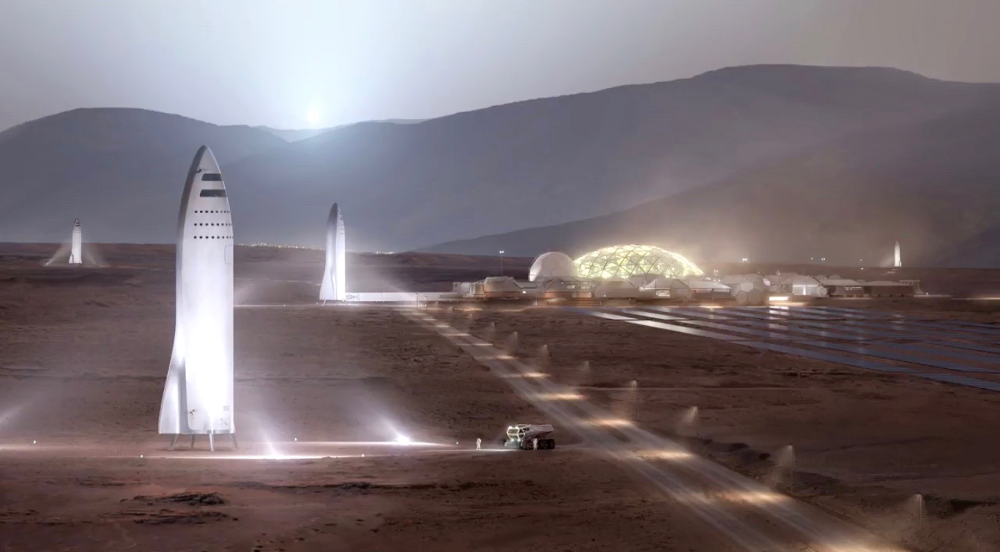

Future of Mars
In the late 2020s, several spacecraft, including a lander, rocket, and multiple helicopters, would be part of this interplanetary relay effort to deliver the first samples ever returned from another planet. These samples are expected to be brought to Earth in the early to mid-2030s.
Long-term proposals have included sending settlers and terraforming the planet. Proposals for human missions to Mars have come from e.g. NASA, European Space Agency, Boeing, and SpaceX.